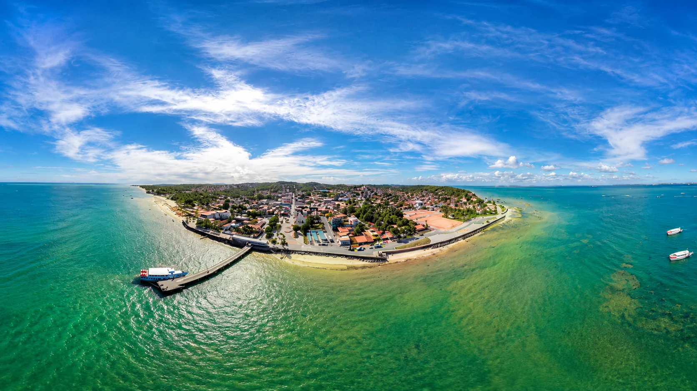
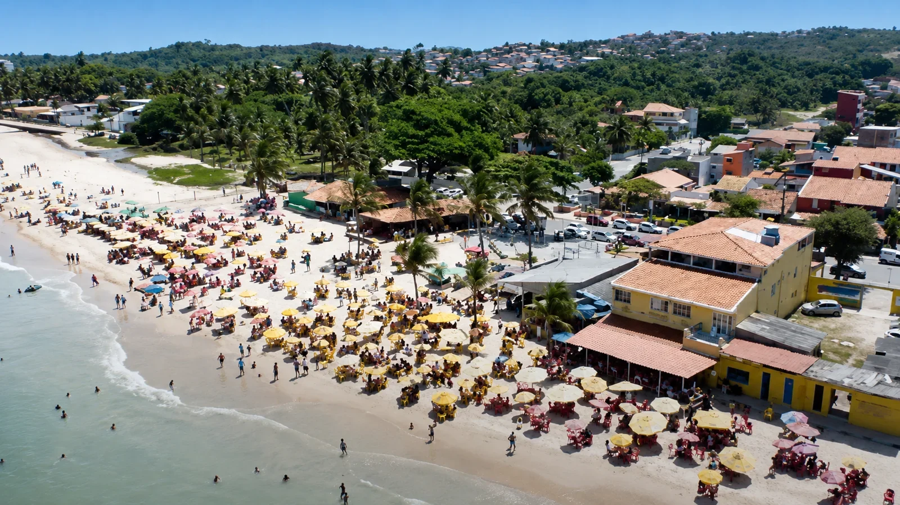
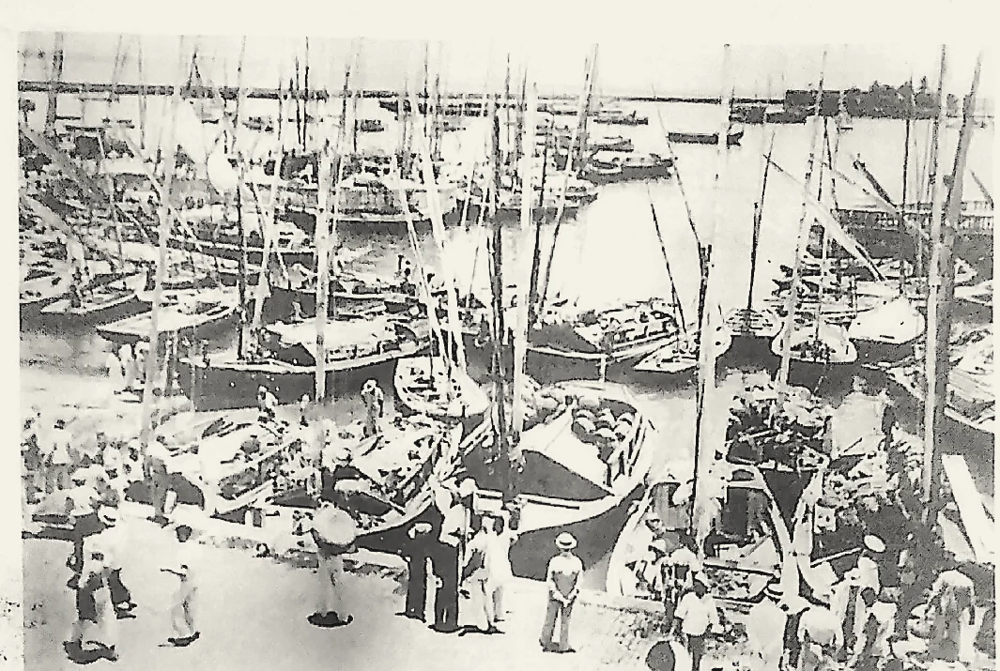
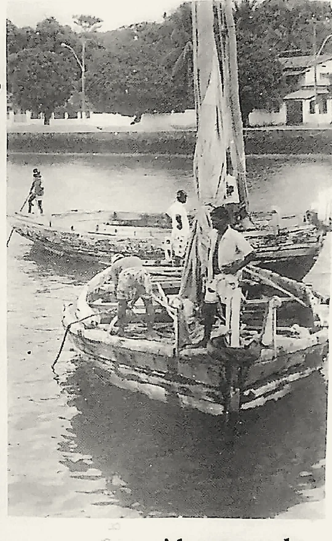
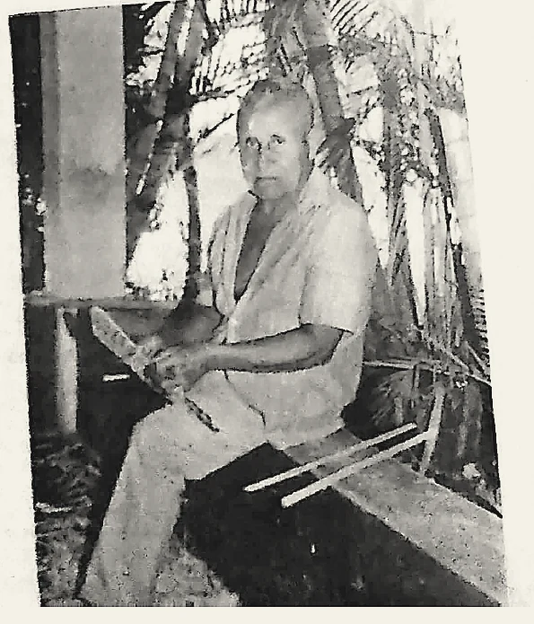
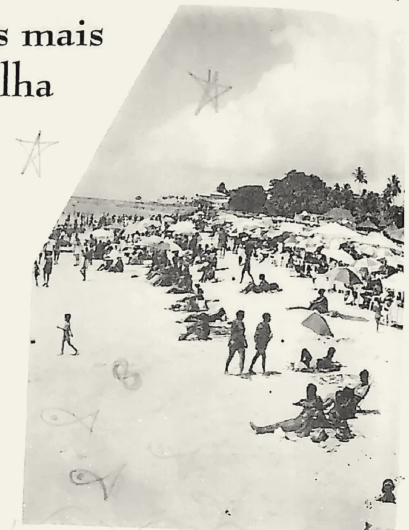
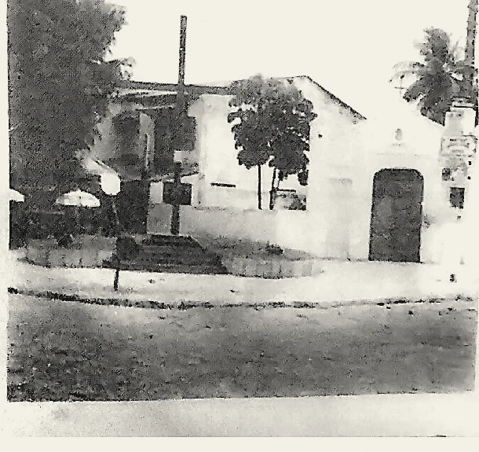
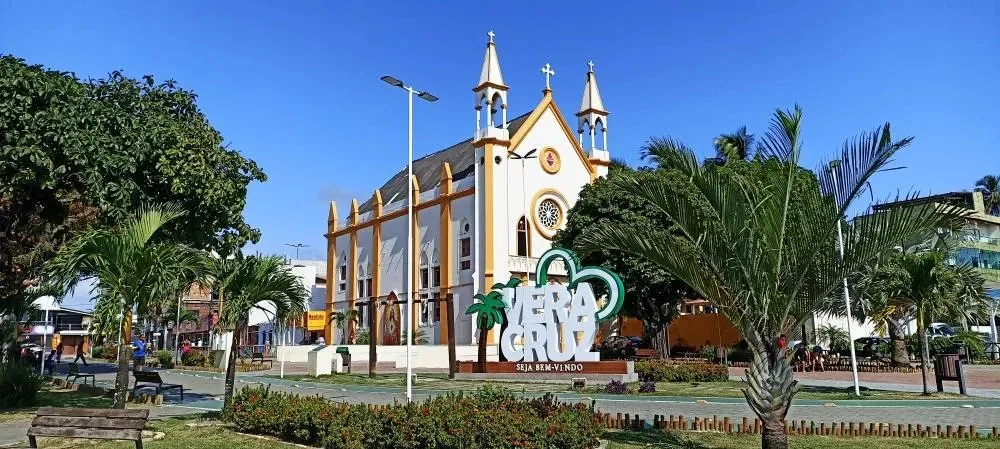
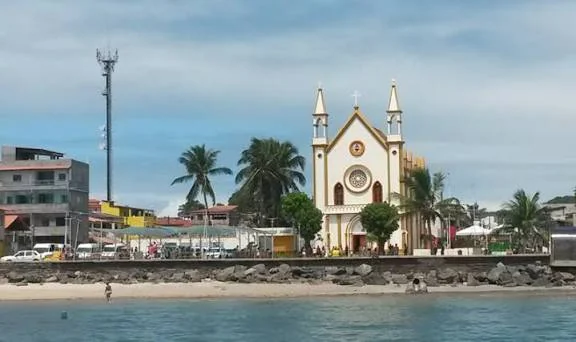

Sede de Vera Cruz · Bahia
Mar Grande
Porta de entrada do município, território de pescadores, travessias, veraneio, fé e encontros. Aqui, a cidade cresceu de frente para as águas.
Chegadas, partidas e pertencimento
Porta de entrada
O terminal marítimo conecta a sede municipal a Salvador.
Terra de pescadores
A pesca e os saberes das marés atravessam a memória local.
Centro de Vera Cruz
Comércio, serviços públicos e circulação se concentram na sede.
A comunidade que recebe Vera Cruz pelo mar
Mar Grande é a sede administrativa de Vera Cruz e uma das paisagens mais reconhecidas da Ilha de Itaparica. O terminal, a praia, o comércio, a igreja e a praça formam um centro onde a vida urbana continua profundamente ligada às águas.
Antes de concentrar serviços e circulação, Mar Grande era lembrado principalmente como terra de pescadores e lugar de veraneio. Saveiros, canoas e, mais tarde, lanchas aproximaram a comunidade de Salvador e ajudaram a transformar a orla em espaço de trabalho, lazer, fé e encontro.

Uma história conduzida por barcos, veranistas e trabalhadores do mar
A formação de Mar Grande está ligada à pesca, às praias e às travessias pela Baía de Todos-os-Santos.
A dissertação de Silvano Sulzart Oliveira Costa descreve Mar Grande como lugar de veraneio, sede de Vera Cruz e ponto de chegada das lanchas. Ao recordar a infância, o autor apresenta uma comunidade marcada pelos pescadores, pelos arrecifes, pelos frutos colhidos perto das praias e pela intensa movimentação do verão.
Em diálogo com essa memória, a literatura de Jorge Amado retrata estradas que eram praias, casas simples, vendedores de peixe, candomblés respeitados, barcos que saíam pela manhã e veranistas que chegavam pelo mar. Essa imagem não resume toda a história, mas ajuda a compreender a forte identidade marítima da comunidade.
Com a emancipação de Vera Cruz, em 1962, Mar Grande consolidou-se como sede do novo município. A administração pública, o transporte, o comércio e os serviços ampliaram sua centralidade sem apagar a presença cotidiana da pesca e da travessia.
Batizados e casamentos em Itaparica
Moradores deslocavam-se para a Paróquia do Santíssimo Sacramento.
Chegada da imagem do Sagrado Coração
A imagem veio do Rio de Janeiro por navio e seguiu para Mar Grande em saveiro.
Início das obras da igreja
Pedreiros e jovens da ilha participaram da construção com materiais trazidos de Salvador.
Mar Grande torna-se sede
A emancipação política de Vera Cruz fortaleceu seu papel administrativo.
Inauguração da praça
A Praça Anísio Nelson de Brito foi construída diante da igreja.
Arquivo histórico · Revista Vera Cruz - 37 anos
Mar Grande pelas páginas de uma revista que virou memória
A revista comemorativa Vera Cruz - 37 anos registrou histórias de transporte, veraneio, cotidiano e personagens ligados a Mar Grande. Nesta página, as matérias foram reconstruídas em linguagem atual, sem reproduzir os recortes do periódico como texto corrido.

Revista · página 07
Saveiros marcaram época
Antes do ferryboat e da estrutura atual de transporte, a ligação entre Salvador e Mar Grande dependia fortemente das embarcações à vela.
A reportagem lembra saveiros ancorados na rampa do antigo Mercado Modelo, utilizados para transportar passageiros, alimentos, tecidos, querosene e outras mercadorias. Mar Grande possuía uma frota lembrada por nomes como Flor de Liz, Luz do Mar, Santo Antônio, Estrela do Mar e São Bento.
Mestres experientes conduziam as viagens pela Baía de Todos-os-Santos, enfrentando diferentes condições de vento e maré. A implantação do ferryboat reduziu a utilidade desses saveiros, encerrando gradualmente um modo de transporte que marcou a memória da comunidade.
Travessia
Comércio
Saveiros
Salvador

Revista · página 08
“200 réis para saltar carregado”
Segundo a revista, até meados de 1939 muitos passageiros que chegavam a Mar Grande desembarcavam nos ombros ou braços de tripulantes e carregadores, evitando entrar na água. O serviço custava 200 réis por pessoa e fazia parte da rotina de chegada dos saveiros.
O relato ajuda a visualizar uma orla anterior aos atuais atracadouros, quando desembarcar também dependia da maré, das ondas e da habilidade de quem conhecia aquele trecho da costa.
1939
Revista · página 08
A antiga Ponte do Duro
A mesma edição registra a construção de uma ponte na Praia do Duro em 1939. A obra é associada a Edmundo Guimarães, veranista de Mar Grande, e teria surgido para facilitar o embarque e o desembarque da população.
A reportagem conta que uma taxa de 200 réis era cobrada aos passageiros e destinada à conservação da estrutura. Com mudanças nas linhas de transporte, a ponte perdeu movimento e acabou entrando em decadência.
A Ponte do Duro é um registro diferente da atual Praça Anísio Nelson de Brito, conhecida popularmente como Praça do Duro.
Crônica · página 10
A felicidade mora em Mar Grande
Em uma crônica afetiva, José Augusto Bebert apresenta Mar Grande pelo olhar de quem escolheu a comunidade para viver e conviver. O texto destaca a proximidade com Salvador, as praias, os encontros entre moradores, as caminhadas entre localidades e a familiaridade criada no cotidiano.
Mais do que descrever pontos geográficos, o autor registra uma atmosfera: vizinhos que se conhecem, rodas de conversa, comidas preparadas nos bares, deslocamentos entre Gamboa, Duro, Penha e Cacha-Pregos e a sensação de que o território inteiro podia ser vivido como uma grande rede de amizades.


Revista · página 16
O badalado veraneio
O verão transformava Mar Grande em ponto de encontro entre moradores e famílias vindas de Salvador.
A revista descreve um período em que o “veraneio” era associado especialmente aos meses entre dezembro e março. Casas eram ocupadas por temporadas, praias ficavam mais movimentadas e antigas famílias retornavam ano após ano, fortalecendo uma cultura de férias que ajudou a projetar Mar Grande como um dos lugares mais conhecidos da ilha.
O registro também mostra como turismo e vida comunitária se misturavam: praias, comércio, transporte marítimo e encontros sociais ganhavam outro ritmo durante a estação mais movimentada.
Memórias · página 19
Mar Grande lembrada por José Joaquim de Almeida Netto
Em outro texto da revista, José Joaquim de Almeida Netto reconstrói lembranças das décadas de 1940 e 1950. Ele recorda temporadas de verão, casas na Ilhota, no Jaburu e no Duro, banhos de mar, pesca nos arrecifes, futebol na praia e uma rotina em que a chegada de lanchas e saveiros fazia parte do espetáculo cotidiano.
Suas reminiscências também registram uma Mar Grande com infraestrutura muito mais simples: casas modestas, ausência de água encanada em parte do período e relações de vizinhança que davam ao veraneio um caráter bastante diferente do turismo atual.
O valor desse relato está justamente no ponto de vista. É a memória de um personagem sobre a comunidade que conheceu, útil para comparar paisagem, costumes e formas de sociabilidade entre diferentes gerações.

Por que esse nome?
Uma denominação nascida da paisagem e da força das águas
As fontes consultadas não registram, de forma conclusiva, o momento exato em que o nome Mar Grande foi escolhido.
A interpretação tradicional associa a denominação à ampla extensão de água diante da comunidade e à percepção de um mar mais aberto, sujeito a ventos, ondas e temporais. Jorge Amado chegou a destacar a força dos temporais dessa zona.
Por isso, a página apresenta essa explicação como uma leitura histórica e popular, e não como uma etimologia documental definitivamente comprovada. O nome, de todo modo, combina com a experiência de um lugar cuja vida sempre foi orientada pelo movimento das águas.
Igreja do Sagrado Coração de Jesus
A matriz tornou-se referência religiosa, arquitetônica e visual para quem chega a Mar Grande pelo mar.

Uma igreja erguida com doações e trabalho da ilha
As obras começaram em 1943, impulsionadas pelo Padre Manoel Santos Lemos, por doações de veranistas e fazendeiros e pela participação de jovens e pedreiros da Ilha de Itaparica.
Parte dos materiais de construção veio de Salvador em saveiros, mostrando como a própria obra nasceu atravessando a Baía de Todos-os-Santos.
Com a construção da matriz, Mar Grande passou a ter sua própria referência paroquial. Batizados, casamentos, missas e celebrações deixaram de depender exclusivamente do deslocamento até Itaparica.
A imagem chegou pelo mar
Produzida no Rio de Janeiro, a imagem do Sagrado Coração de Jesus chegou à Bahia em navio e foi levada a Mar Grande em saveiro.
Procissão náutica
Pescadores acompanharam a chegada da imagem pela baía, transformando o percurso em celebração sobre as águas.
Influência neogótica
Torres, arcos verticais, rosáceas e a fachada simétrica aproximam a igreja do repertório arquitetônico neogótico.


Praça do Duro
Praça Anísio Nelson de Brito
Construída em 1967, a praça nasceu diante da Igreja do Sagrado Coração de Jesus e tornou-se um dos principais espaços públicos de Mar Grande.
Ela recebeu o nome de Anísio Nelson de Brito, pai de Almiro Antunes de Brito, primeiro prefeito de Vera Cruz. Segundo o texto enviado para o projeto, o terreno da praça foi doado para a comunidade.
No local existia um chafariz que fornecia água potável à população do Duro. Com a implantação da rede de água encanada, o equipamento perdeu sua função e acabou desativado.
Ao longo das décadas, a praça passou por quatro grandes reformas, modificando sua estrutura original. Uma pequena placa fixada na parede da igreja preserva a referência à inauguração de 1967.
O mar não é cenário. É caminho, trabalho e calendário.
Em Mar Grande, a água participa da organização do tempo e da vida.
Pescadores leem ventos, marés e correntes; passageiros calculam a hora das lanchas; comerciantes acompanham a chegada dos visitantes; estudantes e trabalhadores cruzam diariamente a baía.
A dissertação Docência nas Águas mostra que a travessia também funciona como espaço de conversa, planejamento, descanso, aprendizado e construção de vínculos.
Na memória mais antiga, os saveiros penetravam entre os arrecifes, transportando pessoas e mercadorias. Com o tempo, as lanchas consolidaram Mar Grande como uma das principais conexões marítimas entre a ilha e Salvador.
“ O mar ensina a esperar a maré, respeitar o vento e compreender que cada travessia tem seu próprio tempo.
Lendas, crenças e memórias das águas
Os presentes de Iemanjá
Nas pedras das praias, crianças encontravam flores, perfumes, bonecas, comidas e outros objetos deixados em oferendas. Esses encontros faziam parte da convivência entre a infância e a religiosidade das águas.
Memória registrada por Silvano Sulzart Oliveira Costa.A oferenda deixada pela sereia
Em um causo de infância, um grupo encontrou doces e bolo entre as Pedras do Jaburu. Entre medo e encantamento, as crianças imaginaram que uma sereia havia deixado o presente.
Narrativa de infância, apresentada como memória oral.O mar que avisa
Pescadores e moradores reconhecem sinais de mudança do tempo pela direção do vento, pelo movimento das ondas e pela aparência das nuvens. Para quem vive das águas, previsão e tradição caminham juntas.
Saber tradicional ligado à experiência marítima.Fatos que ajudam a entender a comunidade
Mar Grande concentra a administração e parte importante dos serviços de Vera Cruz.
O terminal marítimo transformou a localidade em ponto de circulação entre ilha e continente.
Durante décadas, famílias de Salvador chegaram para passar temporadas junto às praias.
Barcos, canoas, saveiros e recifes aparecem repetidamente nas memórias locais.
A chegada da imagem do Sagrado Coração foi celebrada em procissão náutica.
Reformas sucessivas mudaram o desenho original da Praça Anísio Nelson de Brito.
A festa do Sagrado Coração de Jesus ocorre no calendário católico após Corpus Christi.
Mar Grande aparece em narrativas literárias ligadas à pesca, ao veraneio e à cultura das águas.
Um mosaico de mar, fé e movimento
Clique nas fotografias para ampliar.
Memória coletiva
Vozes de Mar Grande
Você conhece uma história sobre a praça, a igreja, o cais, as travessias, as praias ou os antigos moradores? Compartilhe sua lembrança.
Mural da comunidade
0 publicações
Memórias compartilhadas
Conectando ao mural...
Pesquisa e responsabilidade
Fontes da página
O conteúdo combina o texto histórico enviado ao projeto, registros fotográficos, documentos oficiais e a dissertação Docência nas Águas: diversidade cultural, maritimidade e travessias na Ilha de Itaparica, de Silvano Sulzart Oliveira Costa.
- Publicação de Silvano Sulzart sobre a Igreja do Sagrado Coração de Jesus.
- Dissertação de mestrado de Silvano Sulzart Oliveira Costa, UNEB, 2015.
- Histórico municipal e registros administrativos de Vera Cruz.
- Memória oral sobre Mar Grande, Praia do Jaburu, Ponte do Duro e cultura das águas.
- Revista comemorativa Vera Cruz - 37 anos, especialmente as páginas 07, 08, 10, 16 e 19.
A explicação do nome Mar Grande é apresentada como interpretação tradicional, pois não foi localizado um documento conclusivo sobre a criação do topônimo.